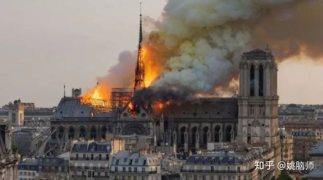
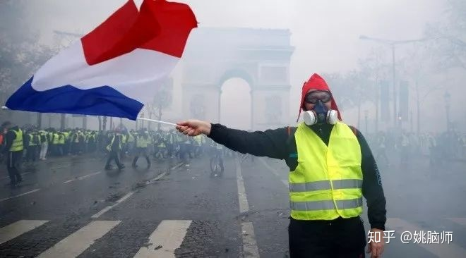
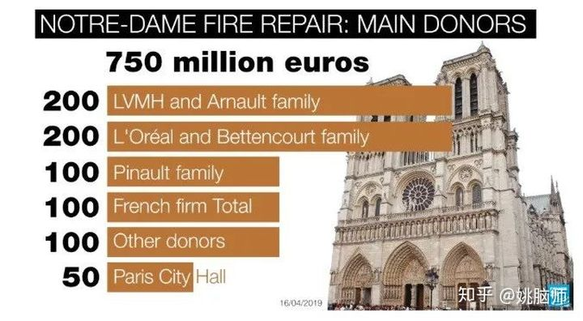
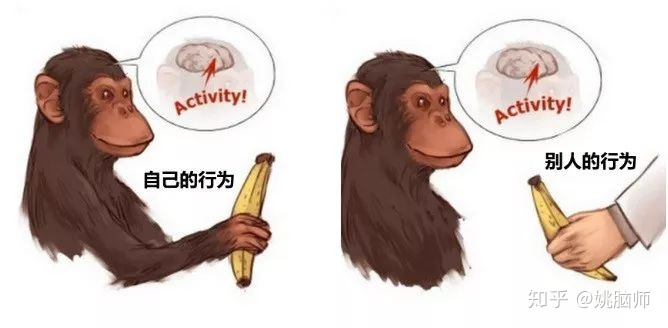
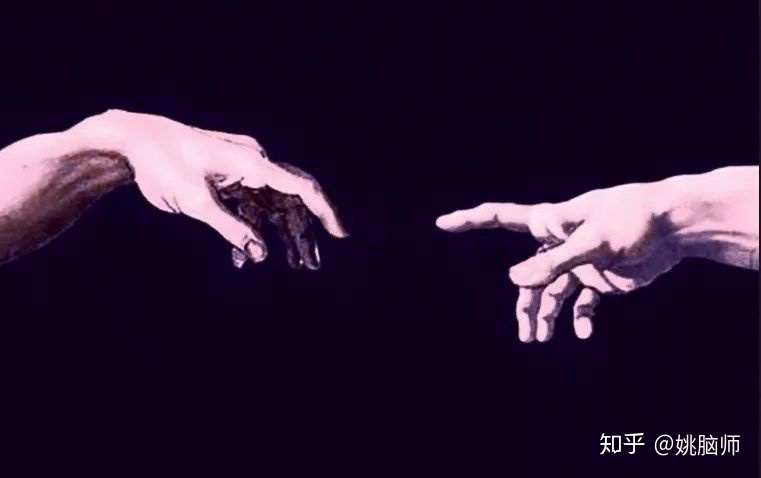

850年的哥特建筑瑰宝，经历了法国革命和两次世界大战，却因一场大火险些毁于一旦。
2019年4月15日晚，一场大火吞噬了巴黎圣母院。由于教堂顶部主要是木质结构，火势蔓延很快，差一点就导致整座教堂坍塌。
经过消防员一夜的竭力挽救，教堂主体算是基本保住了。法国总统即刻宣布要倾全国之力在五年内重建这个法国的象征。

巴黎圣母院的灾难牵挂着世界人民的心。
姚脑师去年才拜访了巴黎圣母院。我很是欣赏哥特式建筑的美轮美奂，更对圣母院百年的建筑历史印象深刻。这座教堂不仅是古老石头的精致堆砌，还是无数工人、建筑师和艺术家用生命书写的华丽篇章，是法国文明的缩影和法国人民的精神寄托。
当圣母院在大火中消逝，巴黎人民在塞纳河边祈祷，世界人民在互联网上关注。灾难发生后不到24小时，来自各界名流的捐款就已经超过7亿欧元，用于重建圣母院。比如Gucci的大老板Francois-Henri Pinaut捐了1亿欧元，创建LV的Arnault家族捐款2亿欧元。

圣母院重建有望固然令人欢欣鼓舞，可同时我们不禁要问： 为什么这些富人们可以对一座教堂大发慈悲，一掷千金，却对法国底层民众的生活疾苦无动于衷呢？
自2018年10月份以来，法国的草根阶级就在法国各地开展了号称 “黄背心” 的反政府运动（Yellow vest movement）。法国的底层民众不堪忍受不断攀升的油费、生活费和赋税，穿着黄背心走上街头，要求政府减轻他们的生活负担，提高薪资水平。
法国政府表示手头紧，而法国的富豪们也不闻不问，没人出来做慈善以帮助底层人民缓解生活的压力。可当圣母院的一场大火引来世界人民的关注，富豪们便纷纷浮出水面捐款，这又是为什么呢？

一、热点炒作
个别富豪给巴黎圣母院捐款恐怕不是出于对艺术的热爱，或是对历史的尊敬，而是出于对自己名誉的投资。
巴黎圣母院是世界的瑰宝，吸引着全球的目光。公开宣布自己为圣母院捐款数千万欧元，不正是蹭热点提升自己声誉的天赐良机吗？
更不用说在法国，捐款享受60%退税。捐1亿的善款，就可以少交6千万的税。也就是相当于这捐的1亿欧元，有6千万是由人民的税款承担的。**用人民的钱长自己的脸，这笔账富人们算得可清楚。**这不，在Gucci老板Pinault宣布捐款1亿欧元后不久，他的顾问Jean-Jacques Aillagon就进言说给圣母院的捐款应当享受90%的退税，欲将自己的实际捐款数降到最低。
或许大部分的富豪是真心想重建巴黎圣母院。问题是：既然他们有能力为圣母院一掷千金，为什么不顺便从善款中拿出一小部分来救济流浪巴黎街头的穷人们呢？为什么法国总统一边说财政紧张，教育底层民众要勒紧裤腰带努力工作，一边却要倾尽全国之力重建圣母院呢？艺术和生命的尊严，哪一个该放在首位呢？

二、同情心是一种选择
人类社会之所以繁荣，是因为人脑能洞察体会他人的情感和意图，也就是具有同情心（empathy），能把小的个体连接成大的社会。
按照之前的观点，心理学以为同情心是天生的特质。
大脑中含有所谓的镜像神经元（mirror neurons）。这些神经细胞在自己行动和观察他人行动的时候都很活跃。也就是说，在观察别人行动的时候，这些神经细胞能像镜子一样 “复制” 别人的行为，仿佛自己也在做同样的事。看到别人微笑时，有关微笑的镜像神经元就会活跃，使我们下意识地微笑。看到别人痛苦时，我们也会不由自主地感到难过。
许多研究都证明大脑确实能下意识地分析一个人的表情、声音和姿态，并且在极短的时间内就能判断出TA的情绪状态。比如，Dimberg和他的同事们只给被试人看了短短30毫秒的表情图片，就发现被试人相关的面部肌肉会无意识地收缩，并能够自动模仿所看到的表情 (Dimberg, Thunberg, & Elmehed, 2000)。

然而越来越多的研究显示，同情心其实是一种选择。
首先，大脑这种模仿、同情他人的能力，并不是一成不变的。大脑有选择地模仿并同情和自己相似的人（ingroup），而对群体之外的人（outgroup）熟视无睹。
例如，Gutsell和Inzlicht录制了一组视频，其中展示了不同种族的人从一张桌子上拿杯子喝水的动作。他们招募了一组被试人观看这些视频，并记录他们的脑电活动。Gutsell和Inzlicht发现，被试人在观看自己以及本族人喝水的时候，他们大脑的运动皮层比观看异族人喝水时要活跃得多 (Gutsell & Inzlicht, 2010) 。这说明大脑偏爱 “复制” 本族人的行为，但是对外族人的行为就不怎么敏感了。生活经历的差异导致的无法感同身受使富人和穷人分属于两个对立的群体，所以富人对穷人缺乏同情心也就不难理解了。
其次，同情心还随着权力感的增加而减弱。
《蜘蛛侠》里有句台词叫 “With great power comes great responsibility”，意即力量越大，责任也越大。越是强大的人就越应当挺身而出帮助弱小的人，但是事实正相反。Hogeveen和同事们让一组被试人回忆并写下自己强势（比如炒别人鱿鱼）或是弱势（比如被炒鱿鱼）的经历，从而暂时提高或是降低被试人的权力感。他们接着让被试人观看一只手捏皮球的视频，并用穿颅磁刺激（TMS）和手部的电极来测量运动皮层的活跃程度。他们发现运动皮层的活跃度和被试人的权力感成反比。权力感越强的人，TA的运动皮层在观看别人捏皮球时的反应越小。反倒是弱势的大脑更愿意模仿他人的行为 (Hogeveen, Inzlicht, & Obhi, 2014) 。这背后的道理不难理解：财富越多，权力越大的人生存越是有保障，因此就没有动力去和他人互动组队，也就不需要同情他人。
最后，我们时常选择逃避同情他人。
在别人需要我们的时候，我们并不总是愿意出手相助。大部分人都有假装若无其事从乞丐身边走过的经历，也会选择对弱势群体漠不关心。Shaw和同事们发现，当同情他人代价很高的时候，我们会主动回避那些会激发同情心的信息，以避免自己善心大发，付出过高的代价 (Shaw, Batson, & Todd, 1994) 。比如4月19日斯里兰卡恐怖袭击死了很多人，如果只是需要我们在社交平台上表示下同情，大多数人是非常愿意的，举手之劳嘛。但若是被要求捐款，或是照顾死者的家属，大部分人可能就要找理由回避了。

三、人性本是虚伪？
说到这里，我们逐渐认识到人的同情心并不是一成不变的特质。在很多情况下，同情其实是一种选择。
但这并不意味着同情他人只是虚伪的套路，而是说明同情心是可以通过后天培养获得的。
Schumann和他的同事们就提出了同情心是可以塑造的理论 (Schumann, Zaki, & Dweck, 2014)。在一系列实验里，研究者们证明了同情心不完全是自动的情感反应，还需要依赖主观上的努力。具有成长型思维（growth mindset）的人认为同情心可以通过练习来提高。他们在主观上会更主动地去同情外族人和弱势群体（如癌症患者），在帮助他人和个人利益有冲突的时候会更愿意磨练自己的同情心。
这样看来，同情心的缺失和可选择性并不是人性天生的缺陷。我们的大脑有健全的同情心和情感系统。用不用它，怎么用它，其实选择权是掌握在我们手中的。
参考文献
- Dimberg, U., Thunberg, M., & Elmehed, K. (2000). Unconscious facial reactions to emotional facial expressions. Psychological Science, 11(1), 86–89. doi:10.1111/1467-9280.00221
- Gutsell, J. N., & Inzlicht, M. (2010). Empathy constrained: Prejudice predicts reduced mental simulation of actions during observation of outgroups. Journal of Experimental Social Psychology, 46(5), 841–845. doi:10.1016/j.jesp.2010.03.011
- Hogeveen, J., Inzlicht, M., & Obhi, S. S. (2014). Power changes how the brain responds to others. Journal of Experimental Psychology. General, 143(2), 755–762. doi:10.1037/a0033477
- Schumann, K., Zaki, J., & Dweck, C. S. (2014). Addressing the empathy deficit: beliefs about the malleability of empathy predict effortful responses when empathy is challenging. Journal of Personality and Social Psychology, 107(3), 475–493. doi:10.1037/a0036738
- Shaw, L. L., Batson, C. D., & Todd, R. M. (1994). Empathy avoidance: Forestalling feeling for another in order to escape the motivational consequences. Journal of Personality and Social Psychology, 67(5), 879–887. doi:10.1037/0022-3514.67.5.879